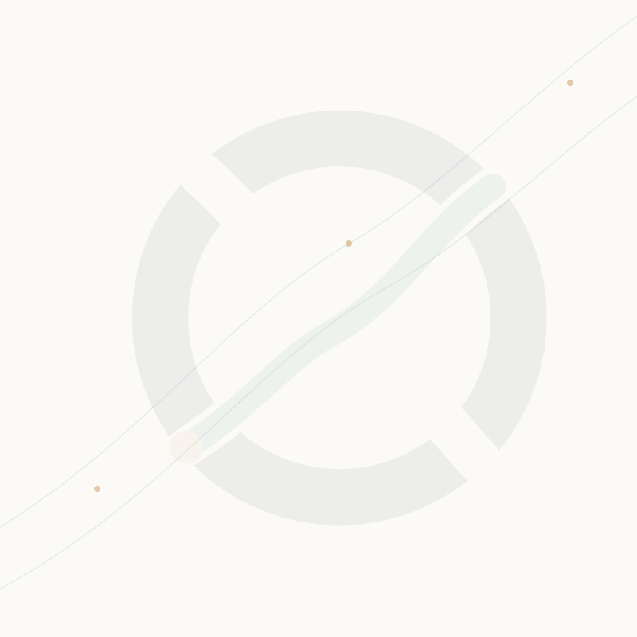

ORIGEX Brand Identity System
Production QA surface for the approved Route 3 direction: global-market globe, source-to-market route and upward opportunity cue. This page is for brand review only and does not integrate the identity into runtime pages.
Light / Dark Surface
Arabic-facing
Bilingual
Premium Mark

Compact-size test
Canonical Palette
Typography
From source to market.
Manrope · structured, premium and commercially clear.
من المصدر إلى السوق، بمسار تجاري أوضح.
تجوال · عربي أولًا، واضح ومناسب لتجربة B2B.

Usage Controls
UseTrade Ink on light surfaces, light logo on Deep Ink, Copper as a controlled route accent, and the fixed mark geometry in both LTR and RTL.
UseMark-only for favicon and compact surfaces; bilingual lockup only where both languages need equal prominence.
Do notMirror, rotate, stretch, recolor or detach the route arrow from the globe.
Do notTurn the mark into a cart/delivery/restaurant icon or merge it with supplier logos.
ORIGEX / ORX-P01 · Route 3 Brand Production V1 · © ORVEAX · 2026-08-19